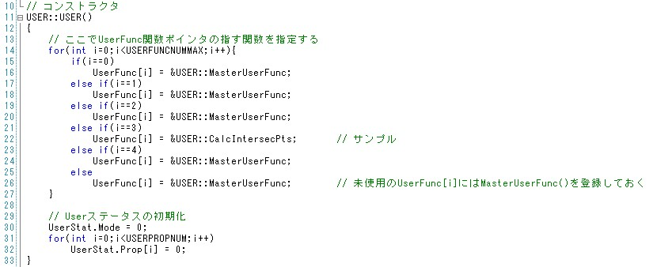
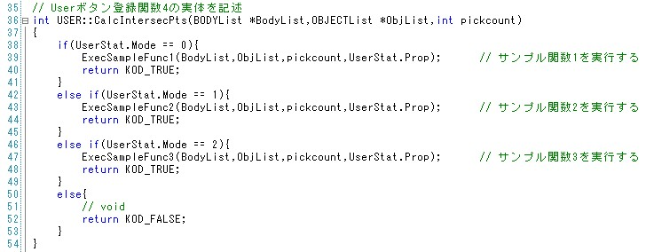
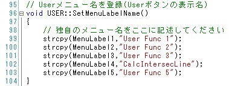
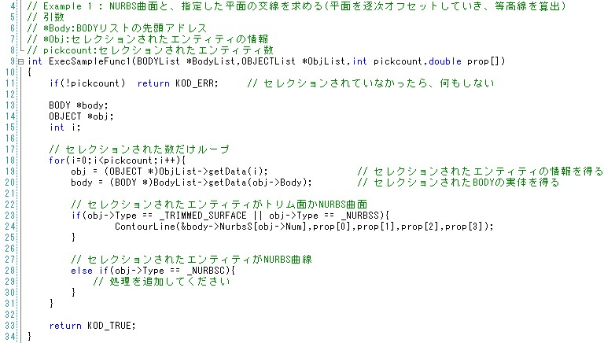
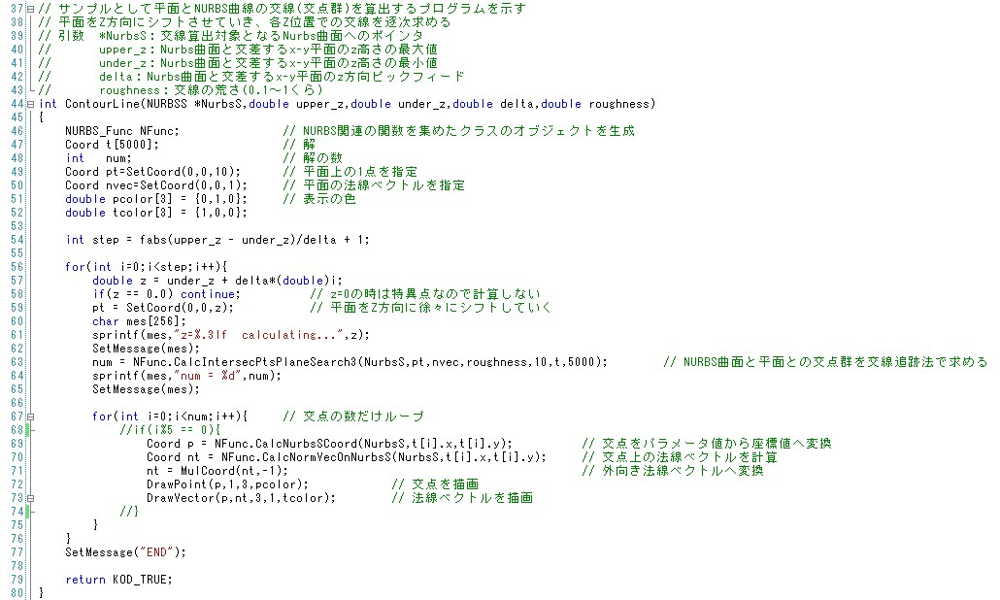

|
|
|
Prev
Index
Next |
サンプルアプリケーションのソース解説
このセクションでは、2.5 サンプルアプリケーションの実行のEx.1のソースについて解説すると共に、ユーザーが 独自でアプリケーションを作成するための基礎について説明します。
- をご覧ください。後は、z高さをfor文で指定したプロパティ値づつシフトさせながら、 63行目NFunc.CalcIntersecPtsPlaneSearch3()関数で交点群を求めています。ここで、CalcIntersecPtsPlaneSearch3()によって算出される交点は指定したNURBS曲面のパラメータ値 u,vで表現されています。このパラメータ値から実空間座標x-y-z値へ変更するために、69行目NFunc.CalcNurbsSCoord()があります。更に、70行目では、その各交点での 法線ベクトルを算出しています。算出された交点及び法線ベクトルは72、73行目DrawPoint()、DrawVector()によってグラフィック領域に描画されます。
UserFunc.cpp/.h
Kodatunoを用いてアプリケーションを作成するために、UserFunc.cpp及びUserFunc.hが用意されています。これはKodatunoのGE部/GUI部と、 ユーザー独自に作成するソースコードとのブリッジとしての役割を果たします。つまり、USERクラスには、KodatunoGE/GUI部にユーザーが作成した 関数を登録するための仕組みが備わっています。では、実際にソースコードを見てみましょう。
まず、UserFunc.hには、"USER"クラス及び"UserStat_"構造体が主に定義されています。UserStat_構造体の持つ2つの変数(Mode, Prop[])には、 Kodatunoアプリケーションを実行したときのユーザー用ボタン"User Stat"で設定されるパラメータ値がそれぞれ格納されます。 次に、UserFunc.cppですが、ここにはUSERクラスで宣言されている関数の実体が記述されています。まずUSERクラスのコンストラクタを 見てみましょう。ここでは、UserFunc()という関数ポインタにユーザーが作成した関数を登録しています。22行目を見てみると、CalcIntersecPts()という名の関数を UserFunc()に代入しています。サンプルではif文の4番目にこのCalcIntersecPts()が記述されています。 これは、Kodatunoアプリケーションのユーザーボタンの"User Func 4"に当たる部分に対応します。 
CalcIntersecPts()はユーザーが自作する関数であり、その実体は36行目から書かれています。UserFunc()自体は引数が決まっていますので、 それに代入するCalcIntersecPts()の引数もUserFunc()に合わせる必要があります。引数の説明を以下に記します。これらの引数を持つ自作関数CalcIntersecPts()の中身を次に見てみましょう。
- BODYList *BodyList
Kodatunoは読み込んだBodyの幾何情報を読み込んだ数だけ、読み込んだ順にリスト構造として保持します。*BodyListはそのリストへのポインタです。
- OBJECTList *ObjList
あるBodyに対して、ある面あるエッジ(オブジェクト)を選択した場合、その選択されたオブジェクトを識別するための情報が必要です。*ObjListはそのセレクション情報 を提供する引数です。
- int pickcount
全部で幾つの面あるいはエッジを選択したかを示します。
CalcIntersecPts()では、UserStat.Modeの値をif文で判別しています。UserStatは冒頭で述べたUserStat_構造体のことであり、UserStat.Modeは ユーザー用ボタン"User Stat"で設定するラジオボタン"Mode"でどのボタンが選択されているかを表します。"Mode 1"が選択されていれば、 UserStat.Modeには"0"が代入されます。前セクションにて、等高線を求めるためにModeを1に選択しましたので、39行目ExecSampleFunc1()が 実行されたことになります。ExecSampleFunc1()が持つ引数は、CalcIntersecPts()の引数をそのまま受け継いでいるのに加え、Stat.Prop[]を新たに与えています。 この中には、ユーザー用ボタン"User Stat"で設定する15個のPropの値全てが格納されています。 
次にExecSampleFunc1()を見ていくわけですが、Kodatunoへ自作関数を登録する操作はここまでとなります。つまり、ExecSampleFunc1()が空の関数であったとしても、 以上の操作によってKodatunoアプリケーションの"User Func4"に当たる"CalcIntersecLine"ボタンを押せば、ExecSampleFunc1()を実行することができます。ここで、 ボタン"User Fucn *"に独自のボタン名を登録するには、UserFunc.cpp内のSetMenuLabelName()内の文字列を変更することで可能となります。ExecSampleFunc1()を見ていきます。ExecSampleFunc1()はUserFunc_Sub.cpp/.hに記述されています。（これらサブファイルは既にKodatunoシステム部とは関係ありませんので、 ユーザーが独自に作成する必要があります。）  ExecSampleFunc1()内では、for文により、選択されたオブジェクト数(pickcount)だけループしながら、各オブジェクトの幾何情報をリストから取り出しています。 19行目では、i番目に選択されたオブジェクトの位相情報（どのBodyに属しているか、NURBS表現((トリムド)曲面か曲線か)、何番目のオブジェクトか、など） を取得しています。20行目では、その位相情報からBodyの実体(幾何情報を持った構造体へのポインタ)を取得しています。この2行の手続きによって、選択したオブジェクトの 幾何情報が取得できます。23行目以降のif文は、取得した幾何情報が(トリムド)曲面なのか曲線なのかを判別しています。このサンプルアプリケーションでは、曲面に対する処理 を行いたいわけですから、23行目のifが真の場合のみ、24行目に示す処理を行うようにしています。よってContourLine()関数が実際の等高線算出プログラムの演算コア部です。  ContourLine()関数を上に示します。等高線の算出は、対象のNURBS曲面と、ある高さzでのx-y平面との交線を算出することで表現できます。このような各種NURBS演算を関数ライブラリ として持っているのがNURBS_Funcクラスです。46行目ではそのNURBS_FuncクラスのオブジェクトをNFuncという名前で宣言しています。 NURBS_Funcにどのような関数があるかは、3.3 NURBS演算ライブラリ 
以上で、等高線算出プログラムEx.1のソース解説を終了します。Ex.2(NURBS曲面同士の交線算出)に関しても、基本的には同じ流れとなります。
| Copyright(C) Kodatuno Development Team, 2011 | Last modified: Mar. 3, 2011 |